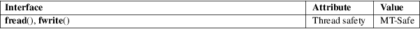

fread, fwrite − binary stream input/output
Standard C library (libc, −lc)
#include <stdio.h>
size_t
fread(void ptr[restrict .size *
.nmemb],
size_t size, size_t nmemb,
FILE *restrict stream);
size_t fwrite(const void ptr[restrict
.size * .nmemb],
size_t size, size_t nmemb,
FILE *restrict stream);
The function fread() reads nmemb items of data, each size bytes long, from the stream pointed to by stream, storing them at the location given by ptr.
The function fwrite() writes nmemb items of data, each size bytes long, to the stream pointed to by stream, obtaining them from the location given by ptr.
For nonlocking counterparts, see unlocked_stdio(3).
On success, fread() and fwrite() return the number of items read or written. This number equals the number of bytes transferred only when size is 1. If an error occurs, or the end of the file is reached, the return value is a short item count (or zero).
The file position indicator for the stream is advanced by the number of bytes successfully read or written.
fread() does not distinguish between end-of-file and error, and callers must use feof(3) and ferror(3) to determine which occurred.
For an explanation of the terms used in this section, see attributes(7).

C11, POSIX.1-2008.
POSIX.1-2001, C89.
The program below demonstrates the use of fread() by parsing /bin/sh ELF executable in binary mode and printing its magic and class:
$
./a.out
ELF magic: 0x7f454c46
Class: 0x02
Program
source
#include <stdio.h>
#include <stdlib.h>
#define ARRAY_SIZE(arr) (sizeof(arr) / sizeof((arr)[0]))
int
main(void)
{
FILE *fp;
size_t ret;
unsigned char buffer[4];
fp =
fopen("/bin/sh", "rb");
if (!fp) {
perror("fopen");
return EXIT_FAILURE;
}
ret =
fread(buffer, sizeof(*buffer), ARRAY_SIZE(buffer), fp);
if (ret != ARRAY_SIZE(buffer)) {
fprintf(stderr, "fread() failed: %zu\n", ret);
exit(EXIT_FAILURE);
}
printf("ELF
magic: %#04x%02x%02x%02x\n", buffer[0], buffer[1],
buffer[2], buffer[3]);
ret =
fread(buffer, 1, 1, fp);
if (ret != 1) {
fprintf(stderr, "fread() failed: %zu\n", ret);
exit(EXIT_FAILURE);
}
printf("Class: %#04x\n", buffer[0]);
fclose(fp);
exit(EXIT_SUCCESS);
}
read(2), write(2), feof(3), ferror(3), unlocked_stdio(3)